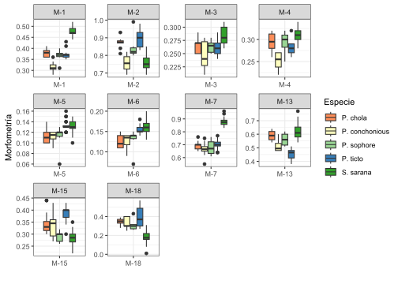
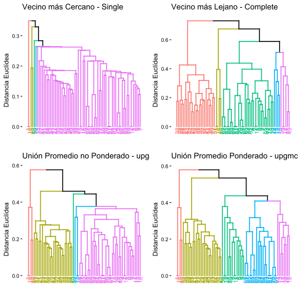
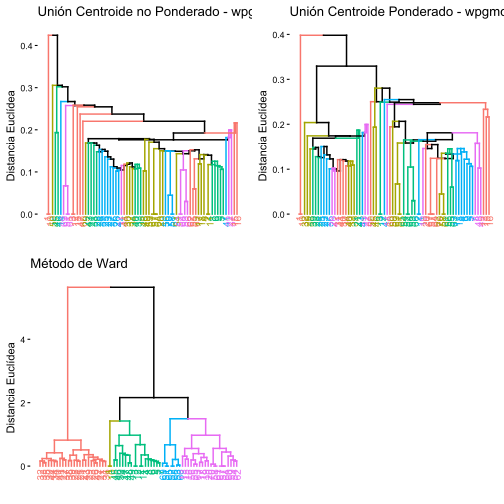
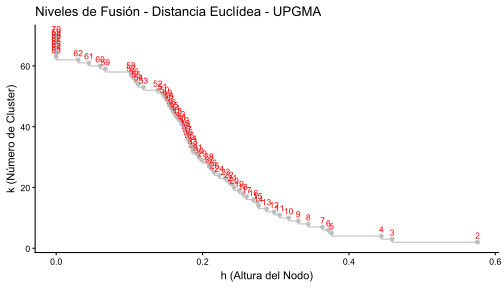
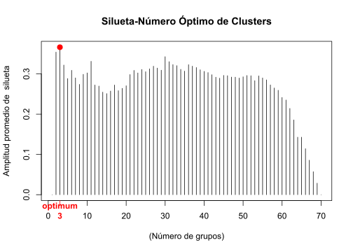
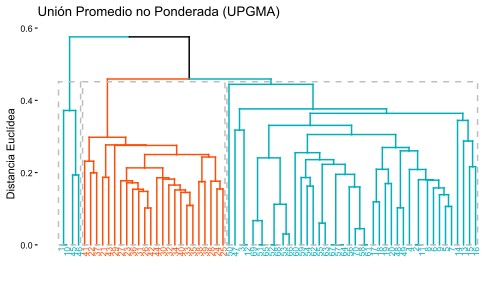
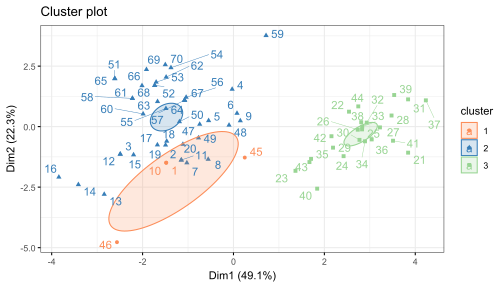
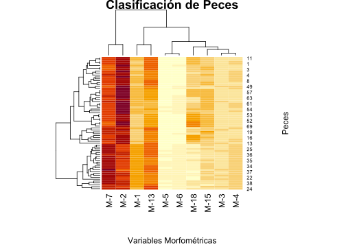
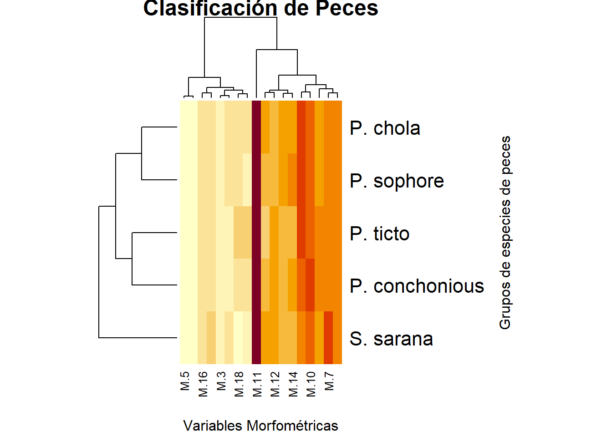
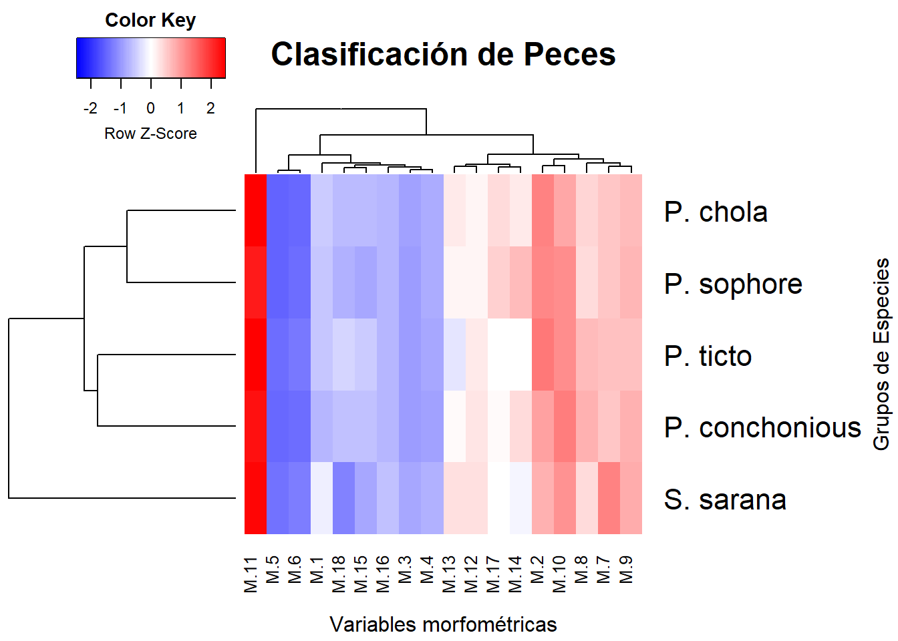

# Librerías requeridas
library(ellipse)
require(gclus)
require(SciViews)
require(ade4)
require(vegan)
library(corrplot)
library(ggplot2)
library(pheatmap)
library("gplots")
library(gridExtra)
library(factoextra)
library(reshape)
library(tidyverse)
library(readxl)
library(kableExtra)
library(flextable)Taller6.2 CLA Peces
Materiales requeridos para el taller en clase
En los siguientes enlaces se podrán descargar archivos comprimidos de los dos talleres donde se pueden aplicar procedimientos para la clasificación mediante análisis de clúester - CLA, con datos morfométricos de peces de la India (📰 Taller 6.2 Analisis de Clúster - CLA).
Nota: una vez se descarguen los materiales, se requiere descomprimirlos antes de realizar cualquier procedimiento y seguir las orientaciones del docente para realizar los ejercicios requeridos.
Diapositivas en vivo - Slides.com

Nota: Estas diapositivas contienen los talleres 6, 7, 8 y 9 (CLA, LDA, MANOVA, PERMANOVA)
Objetivo de la actividad:
La base de datos que se utilizará es la de medidas morfométricas de peces de un estudio realizado con peces de la india por Gupta et al. (2018) Articulo fuente en los que se validó la taxonomía de peces de la subfamilia Barbinae, utilizando 19 variables morfométricas y 19 variables meristicas, correspondientes a 5 especies de la familia en mención.

El objetivo de este ejercicio consiste en la realización de un análisis de clúster, basado en cuatro pasos generales (distancia, método de agrupación, número de clúster y selección de variables clasificadoras), para realizar una clasificación de los individuos de peces, basado en las variables morfométricas que los caracterizan. A partir de esa clasificación se generarán unos grupos que pueden compararse con los realizados previamente (grupos= las cinco especies)
Referencias bibliográficas de apoyo.
Libro: Repositorio de archivos y del “Análisis de datos ecológicos y ambientales” - Rodríguez-Barrios Javier (2022) Ver el capítulo de este libro Ejemplo 4. CLÚSTER PARA DATOS DE ABUNDANCIA en donde se detallan los procedimientos que pueden servir de apoyo al presente ejercicio.
Referencias bibliográficas de apoyo.
Microalgas de la CGSM - Vidal et al. (2018). Implementación de un cluster no jerárquico para valorar paleoambientes con microalgas de la Ciénaga Grande de Santa Marta.
Cluster Brinda información complementaria para los diferentes pasos que requiere un análisis de clúster.
Clustering y heatmaps Similar al anterior enlace, brinda información detallada sobre el análisis de clúster.
Análisis de conglomerados Otro enlace con información general sobre los clúster.
Clustering y heatmaps: aprendizaje no supervisado Aplicación de clúster en diferentes disciplinas.
Hierarchical Cluster Analysis Enlace en el que se encuentra información sobre cluster jerárquicos y técnicas detalladas para seleccionar el número de k - clúster o grupos formados.
Determining The Optimal Number Of Clusters Información relevante para el paso 3 de este ejercicio, relacionado a la definición de los k-clúster o el número de grupos formados.
- Clúster no Jerárquicos
K-means Cluster Analysis Brinda información sobre la construcción de clúster no jerárquicos.
- Otros
Introduction to dendextend El paquete dendextend brinda opciones para comparar y visualizar dendogramas. Esto complementa al paso 3 del presente ejercicio, relacionado a la definición de los k-clúster formados.
Hierarchical Clustering on Principal Components Articulación de los clúster en los análisis de componentes principales.
Cargar las librerías requeridas
Cargar o importar la base de datos
La presente base de datos se encuentra en formato plano de csv, presenta una columna Especie que agrupa a las 5 especies de peces, otra columna Grupo, que asigna un número a cada especie y posteriormente a las 19 variables morfométricas y 10 variables meristicas, de las cuales se selecionarán las 19 morfométricas para este ejercicio M.1 a M.19.
# Base de datos
peces <- read_xlsx("peces.xlsx", sheet = "peces") |>
dplyr::select(-1) |>
as.data.frame()
# tabla con los datos
head(peces) %>%
dplyr::select(,c(3:9,15,17,20)) |>
kbl(booktabs = TRUE, longtable = FALSE) %>%
kable_classic(full_width = F) %>%
kableExtra::row_spec(0, bold = TRUE)| M-1 | M-2 | M-3 | M-4 | M-5 | M-6 | M-7 | M-13 | M-15 | M-18 |
|---|---|---|---|---|---|---|---|---|---|
| 0.36 | 0.87 | 0.25 | 0.29 | 0.10 | 0.12 | 0.70 | 0.62 | 0.32 | 0.37 |
| 0.39 | 0.88 | 0.27 | 0.26 | 0.11 | 0.12 | 0.70 | 0.64 | 0.30 | 0.39 |
| 0.36 | 0.87 | 0.25 | 0.28 | 0.10 | 0.11 | 0.65 | 0.62 | 0.44 | 0.36 |
| 0.38 | 0.89 | 0.27 | 0.32 | 0.14 | 0.15 | 0.76 | 0.56 | 0.39 | 0.34 |
| 0.39 | 0.88 | 0.27 | 0.31 | 0.12 | 0.14 | 0.67 | 0.56 | 0.34 | 0.34 |
| 0.40 | 0.93 | 0.29 | 0.32 | 0.12 | 0.14 | 0.70 | 0.56 | 0.34 | 0.30 |
head(peces,4) %>%
dplyr::select(,c(3:9,15,17,20)) |>
flextable()M-1 | M-2 | M-3 | M-4 | M-5 | M-6 | M-7 | M-13 | M-15 | M-18 |
|---|---|---|---|---|---|---|---|---|---|
0.36 | 0.87 | 0.25 | 0.29 | 0.10 | 0.12 | 0.70 | 0.62 | 0.32 | 0.37 |
0.39 | 0.88 | 0.27 | 0.26 | 0.11 | 0.12 | 0.70 | 0.64 | 0.30 | 0.39 |
0.36 | 0.87 | 0.25 | 0.28 | 0.10 | 0.11 | 0.65 | 0.62 | 0.44 | 0.36 |
0.38 | 0.89 | 0.27 | 0.32 | 0.14 | 0.15 | 0.76 | 0.56 | 0.39 | 0.34 |
Exploración de los datos
Para este ejemplo se urtilizarán figuras que relacionan parejas de variables y figuras de cajas que permitan visualizar diferencias entre las especies de peces de acuerdo a su morfometría. *Para facilidad del ejercicio se seleccionarán algunas variables morfométricas - peces1, debido a que son las que presentan mejores patrones lineales.
# Elipses con colores con variables morfométricas
peces1 <- peces[,c(3:9,15,17,20)]
M <- cor(peces1) # Matriz de Correlación (M)La Figura 1.1 permite visualizar las relaciones lineales entre todas las parejas de variables, incluyendo a los coeficientes de correlación de Pearson.
corrplot(M, method = "circle", # Correlaciones con circulos
type = "lower", insig="blank", # Forma del panel
order = "AOE", diag = FALSE, # Ordenar por nivel de correlación
addCoef.col ="black", # Color de los coeficientes
number.cex = 0.6, # Tamaño del texto
col = COL2("RdYlBu", 200)) # Transparencia de los circulos
La Figura 1.2 a diferencia de la anterior, clasifica a los grupos por colores y además incluye a sus coeficientes de correlación y el patrón de distribución de cada variable mediante histogramas de densidad.
peces1 <- peces[,c(3:9,15,17,20)]
peces$Especie <- as.factor(peces$Especie)
pairs ((peces1),panel=function(x,y)
{abline(lsfit(x,y)$coef,lwd=2,col=3)
lines(lowess(x,y),lty=2,lwd=2,col=2)
points(x,y,col=peces$Especie, cex=1.4,pch=19,lwd=0.6)})
La Figura 1.3 permite visualizar la resolución de cada variable para diferenciar o discriminar a las diferentes especies de peces. Esta figura sirve de insumo para descartar aquellas variables con poco potencial de discriminación de las especies.
# Figuras multivariadas de Cajas y bigotes
library(reshape)
ggplot(melt(peces[,c(1,3:9,15,17,20)]), aes(x=variable, y=value)) +
geom_boxplot(aes(fill=Especie)) +
scale_fill_manual(values = c('#fc8d59','#ffffbf','#99d594','#377eb8','#33a02c')) +
labs(x="",y="Morfometría") +
facet_wrap(~ variable,scales="free") +
theme_bw()
Cuatro pasos para el análisis de clúster
A continuación se presenta el paso a paso requerido para un análisis de cluster - cla. Cabe mencionar que es un proceso algo dispendioso en tiempo, pero que brinda la posibilidad de contar con los códigos elaborados para ajustarlos de forma eficiente a otras bases de datos que requieran a este tipo de procedimientos.
PASO 1. Distancia entre observaciones
Son muchas las distancias que pueden emplearse, pero cada una se ajusta al tipo de datos que se requieran trabajar. Para este caso se usará la distancia euclídea, debido a que se ajusta de manera apropiada a datos ambientales, incorporando además al comando scale, debido a que permite estandarizar a este tipo de variables que presentan escalas disímiles.
# Matriz de distancia
d.euclid <- dist(peces[,c(3:21)])
# round(d.euclid,1)PASO 2. Elección del método de agrupación de mayor ajuste
Son siete las opciones de dendogramas, de las cuales solo una será la que mejor se ajusta a los datos trabajados. Para ello, primero se realizarán los dendogramas y posteriormente se escogerá l de mejor ajuste con la correlación cofenética.
2.1 Siete métodos de agrupamiento
# Método 1. Vecino más cercano "Cl.single", función "hclust" y método "single"
Cl.single <- hclust(d.euclid,method="single")# Método 2. Vecino más lejano "Cl.complete", función "complete"
Cl.complete<-hclust(d.euclid,method="complete")# Método 3. UPGMA función "average" Unión Promedio no Ponderado
Cl.upgma<-hclust(d.euclid,method="average")# Método 4. UPGMC función "mcquitty" Unión Promedio Ponderado
Cl.upgmc<-hclust(d.euclid,method="mcquitty")# Método 5. WPGMA función "centroid"
Cl.wpgma<-hclust(d.euclid,method="centroid")# Método 6. WPGMC función "median"
Cl.wpgmc<-hclust(d.euclid,method="median")# Método 7. WARD, función "ward"
Cl.ward<-hclust(d.euclid,method="ward.D")2.2 Figuras de los dendogramas con los siete métodos de agrupamiento
A continuación se realizará un panel que contenga hasta 4 figuras de dendogramas (Figura 1.4, Figura 1.5), lo cual permite resumir al número de gráficas generadas, el comando que se empleará para incluir a varias figuras en un mismo panel grafico es grid.arrange() del paquete gridextra.
f1 <- fviz_dend(Cl.single, k = 5, # k grupos (opcionales)
cex = 0.7, # tamaño del texto de las ramas
ylab = "Distancia Euclídea", # Rotulo de la distancia
main = "Vecino más Cercano - Single") # Rotulo de título
f2 <- fviz_dend(Cl.complete, k = 5, # k grupos (opcionales)
cex = 0.7, # tamaño del texto de las ramas
ylab = "Distancia Euclídea", # Rotulo de la distancia
main = "Vecino más Lejano - Complete") # Rotulo de título
f3 <- fviz_dend(Cl.upgma, k = 5, # k grupos (opcionales)
cex = 0.7, # tamaño del texto de las ramas
ylab = "Distancia Euclídea", # Rotulo de la distancia
main = "Unión Promedio no Ponderado - upgmc") # Rotulo de título
f4 <- fviz_dend(Cl.upgmc, k = 5,
cex = 0.7,
ylab = "Distancia Euclídea",
main = "Unión Promedio Ponderado - upgmc")
grid.arrange(f1,f2,f3,f4, ncol = 2)
f5 <- fviz_dend(Cl.wpgma, k = 5,
cex = 0.7,
ylab = "Distancia Euclídea",
main = "Unión Centroide no Ponderado - wpgma")
f6 <- fviz_dend(Cl.wpgmc, k = 5,
cex = 0.7,
ylab = "Distancia Euclídea",
main = "Unión Centroide Ponderado - wpgmc")
f7 <- fviz_dend(Cl.ward, k = 5,
cex = 0.7,
ylab = "Distancia Euclídea",
main = "Método de Ward")
grid.arrange(f5,f6,f7, ncol = 2)
2.3 Selección del mejor método de agrupamiento - Correlación Cofenética
- 2.3.1 Cálculo de las correlaciones cofenéticas
El método que presente la mayor correlación cofenética será el seleccionado. Para este caso se escogerá el dendograma con el método upgma, el cuál presenta un cofenético de 0.8494.
# (1) Correlación cofenpetica para "single"
cofenet1 <- cophenetic(Cl.single)
simple = cor(d.euclid,cofenet1)
simple[1] 0.8226571# (2) Correlación cofenética para "complete"
cofenet2<-cophenetic(Cl.complete)
compl = cor(d.euclid,cofenet2)
compl[1] 0.7754882# (3) Correlación cofenética para "average"
cofenet3<-cophenetic(Cl.upgma)
upgma = cor(d.euclid,cofenet3)
upgma[1] 0.8494435# (4) CCorrelación cofenética para "mcquitty"
cofenet4<-cophenetic(Cl.upgmc)
upgmc = cor(d.euclid,cofenet4)
upgmc[1] 0.8009618# (5) Correlación cofenética para "centroid"
cofenet5<-cophenetic(Cl.wpgma)
wpgma = cor(d.euclid,cofenet5)
wpgma[1] 0.6888659# (6) Correlación cofenética para "median"
cofenet6<-cophenetic(Cl.wpgmc)
wpgmc = cor(d.euclid,cofenet6)
wpgmc[1] 0.7997027# (7) Correlación cofenética para "ward"
cofenet7<-cophenetic(Cl.ward)
ward = cor(d.euclid,cofenet7)
ward[1] 0.618674- 2.3.2 Tabulación de las correlaciones cofenéticas
Los siguientes comandos permitirán organizar a los siete métodos de agrupamiento, de acuerdo a su nivel de correlación cofenética.
# data frame con cofenéticos
cofeneticos = data.frame(simple,compl,upgma,upgmc,
wpgma,wpgmc,ward)
# cofenéticos por cada métodos (Met)
cofenet=data.frame(Met = 1:7,Cofen=t(round(cofeneticos,3)))
# tabla con orden descendente de cofenéticos
cof_ordenado = cofenet[order(cofenet$Cofen, decreasing = TRUE), ]
cof_ordenado Met Cofen
upgma 3 0.849
simple 1 0.823
upgmc 4 0.801
wpgmc 6 0.800
compl 2 0.775
wpgma 5 0.689
ward 7 0.619Con este comando se puede exportar la tabla de cofenéticos como un archivo plano de csv.
# guardar tabla como csv
# write.csv2(cof_ordenado,"cofenet.csv")- 2.3.3 Figuras de algunas correlaciones cofenéticas vs. matriz de distancia
A continuación se presenta una muestra de la relación entre las matrices de distancia cofenética y de distancia euclínea, que permitió seleccionar al mejor método de agrupamiento (Figura 2.1).
# convertir matricesde distancia a vectores
d.euclid <- as.vector(d.euclid)
d.cofenet1 <- as.vector(cofenet1)
d.cofenet2 <- as.vector(cofenet2)
d.cofenet3 <- as.vector(cofenet3)
d.cofenet4 <- as.vector(cofenet4)
# crear un data frame con los vectores y agregar una columna de etiquetas
simple1 <- data.frame(d.euclid, d.cofenet1, d.cofenet2, d.cofenet3, d.cofenet4)
head(simple1) d.euclid d.cofenet1 d.cofenet2 d.cofenet3 d.cofenet4
1 0.5737595 0.349285 0.6743145 0.5756145 0.5788911
2 0.5601785 0.349285 0.6743145 0.5756145 0.5788911
3 0.6151423 0.349285 0.6743145 0.5756145 0.5788911
4 0.5746303 0.349285 0.6743145 0.5756145 0.5788911
5 0.5673623 0.349285 0.6743145 0.5756145 0.5788911
6 0.5413871 0.349285 0.6743145 0.5756145 0.5788911# Figuras correlaciones cofenéticas
# (1) distancia cofenética para "unión simple"
f1<-ggplot(simple1, aes(d.euclid,d.cofenet1))+
geom_point(size=1.5, color="#4daf4a") +
geom_smooth(method="lm",se=FALSE,color="#377eb8") +
geom_smooth(method="loess",se=FALSE,color ="#e41a1c",lty=2,size=1.3) +
labs(title= "Unión Simple",
subtitle= paste("Correlación cofenética",
round(cor(d.euclid,cofenet1),4)),
x="Distancia Euclidea",
y="Distancia cofenética") +
theme_bw()
# (2) distancia cofenética para "unión completa"
f2<-ggplot(simple1, aes(d.euclid,d.cofenet2))+
geom_point(size=1.5, color="#4daf4a") +
geom_smooth(method="lm",se=FALSE,color="#377eb8") +
geom_smooth(method="loess",se=FALSE,color ="#e41a1c",lty=2,size=1.3) +
labs(title= "Unión Completa",
subtitle= paste("Correlación cofenética",
round(cor(d.euclid,cofenet2),4)),
x="Distancia Euclidea",
y="Distancia cofenética") +
theme_bw()
# (3) distancia cofenética para "unión upgma"
f3<-ggplot(simple1, aes(d.euclid,d.cofenet3))+
geom_point(size=1.5, color="#4daf4a") +
geom_smooth(method="lm",se=FALSE,color="#377eb8") +
geom_smooth(method="loess",se=FALSE,color ="#e41a1c",lty=2,size=1.3) +
labs(title= "Unión promedio no ponderado - upgma",
subtitle= paste("Correlación cofenética",
round(cor(d.euclid,cofenet3),4)),
x="Distancia Euclidea",
y="Distancia cofenética") +
theme_bw()
# (4) distancia cofenética para "unión upgmc"
f4<-ggplot(simple1, aes(d.euclid,d.cofenet4))+
geom_point(size=1.5, color="#4daf4a") +
geom_smooth(method="lm",se=FALSE,color="#377eb8") +
geom_smooth(method="loess",se=FALSE,color ="#e41a1c",lty=2,size=1.3) +
labs(title= "Unión promedio ponderado - upgmc",
subtitle= paste("Correlación cofenética",
round(cor(d.euclid,cofenet4),4)),
x="Distancia Euclidea",
y="Distancia cofenética") +
theme_bw()
grid.arrange(f1,f2,f3,f4, ncol = 2)
PASO 3. Número de grupos formados
La definición de los grupos formados, representan un insumo importante de información, debido a que permiten generar los k cluster en los que se agrupan las observaciones, basado en las variables que las caracterizan. Este insumo es relevante además, como paso previo a otras técnicas que requieren los grupos definidos a priori, como los análisis discriminantes lineales (lda) o los análisis de varianza multivariados (manovas), de igual forma, a partir de los grupos se pueden responder hipótesis enfocadas en las variaciones que pueden presentar las variables a lo largo de gradientes discretos o en cluster.
Opción 1. Niveles de Fusión.
La figura de niveles de fusión es una de las más utilizadas para la generación de grupos o de cluster, debido a la sencillez del componente gráfico, en el cual se definen los cluster o grupos (eje Y), dependiendo del escalón de mayor amplitud o distancia horizontal (eje X). En la Figura 2.2 se observa que la mayor amplitud se presenta en 2 k cluster, por lo cual, el dendograma seleccionado en el paso anterior se puede clasificar en dos grupos de observaciones.
# Base de variables a relacionar (amb)
amb <- peces[,c(3:9,15,17,20)]# Crear un data.frame con los datos de altura, k y número de cluster
f1 <- data.frame(h = Cl.upgma$height, k = nrow(amb):2, cluster = nrow(amb):2)# Crear el gráfico de dispersión y agregar etiquetas de texto
ggplot(f1, aes(x = h, y = k, label = cluster)) +
geom_point(color = "grey") +
geom_text(color = "red", size = 3, vjust = -0.5) +
geom_step(color = "grey", direction = "vh") +
# Personalizar el gráfico con títulos, etiquetas de ejes y paleta de colores
ggtitle("Niveles de Fusión - Distancia Euclídea - UPGMA") +
ylab("k (Número de Cluster)") +
xlab("h (Altura del Nodo)") +
scale_color_manual(values = c("grey", "red")) +
theme(axis.title = element_text(size = 16)) +
theme_classic()
Opción 2. Número optimo de clusters de acuerdo al Ancho de silueta. Índice de calidad de Rousseeuw
La amplitud de silueta es de las opciones más usadas para definir al número de k cluster o grupos del dendograma realizado. En este ejercicio también se define a dos grupos. En caso que los resultados de esta técnica sean diferentes a la anterior, se suele decidir por esta, debido a su mayor grado de precisión.
# Base de datos (amb)
amb <- peces[,c(3:9,15,17,20)]
# Distancia utilizada (d.euclid)
d.euclid <- dist(peces[,c(3:21)])
# Método de agrupamiento seleccionado (cl.upgma)
Cl.upgma<-hclust(d.euclid,method="average")# 1. Crear un vector vacío (amb.vacio) con asw valores
amb.vacio <- numeric(nrow(amb))
# 2. Silueta "sil"
for(k in 2: (nrow(amb)-1)){
sil <- silhouette(cutree(Cl.upgma,k=k),d.euclid)
amb.vacio[k]<-summary(sil)$avg.width}
# 3. Mejor o mayor amplitud de silueta (2 particiones)
k.mejor <- which.max(amb.vacio)
k.mejor [1] 3# Grafica de silueta
plot(1:nrow(amb),amb.vacio,type="h",
main="Silueta-Número Óptimo de Clusters", xlab="(Número de grupos)",
ylab="Amplitud promedio de silueta")
axis(1,k.mejor,paste("optimum",k.mejor,sep="\n"),col="red",
font=2,col.axis="red")
points(k.mejor,max(amb.vacio),pch=16,col="red",cex=1.5)
cat("","Silueta-Número óptimo de Clusters k=",k.mejor,
"\n","Con una aplitud promedio de silueta",max(amb.vacio),"\n") Silueta-Número óptimo de Clusters k= 3
Con una aplitud promedio de silueta 0.3662872 3.1 Figura del dendograma jerárquico final
La Figura 1.5 muestra la manera en la que se organizan las observaciones en los dos grupos formados (ramas rojas y azules) devido a la naturaleza de las variables morfométricas que las caracterizar.
# Dendograma final
fviz_dend(Cl.upgma, k = 3, # k grupos
cex = 0.6, # tamaño del texto de las observaciones
ylab = "Distancia Euclídea", # Rotulo de la distancia
main = "Unión Promedio no Ponderada (UPGMA)", # Rotulo de título
lower_rect = 0, # Inicio de los rectángulos en cero
k_colors = c("#00AFBB","#FC4E07"),
color_labels_by_k = TRUE, # Colores para cada grupo
rect = TRUE) # Rectángulos de cada grupo
Vale la pena mencionar que estos análisis son importantes cuando se cuenta con pocas observaciones (ramas del dendograma), en el caso contrario, es preferible utilizar dendogramas no jerarquicos como el k-meas, el cual fue descrito en uno de los complementos del PCA y se retoma a continuación.
3.2 Figura del dendograma no jerárquico final
- Agrupamiento elegido en el paso 2 (upgma)
# Matriz de distancia
d.euclid <- dist(peces[,c(3:21)])
# Método 3. UPGMA función "average" Unión Promedio no Ponderado
Cl.upgma<-hclust(d.euclid,method="average")- Generación de la variable agrupadora (gr)
# Variable agrupadora con k=3 clúster
grp <- cutree(Cl.upgma, k = 3) # Grupos generados "grp"
grl <- levels(factor(grp)) # Rotulos de los grupos formadosEste es un paso opcional en caso que se requiera insertar la nueva variable agrupadora a la base de datos en revisión.
# Incluir la variable agrupadora en la base de datos
peces.1=data.frame(grp,peces) # Nuevo dataframe con la variable agrupadora (gr)
head (peces.1[,1:8]) # Visualización de las 5 primeras variables morfométricas grp Especie Grupo M.1 M.2 M.3 M.4 M.5
1 1 P. chola 1 0.36 0.87 0.25 0.29 0.10
2 2 P. chola 1 0.39 0.88 0.27 0.26 0.11
3 2 P. chola 1 0.36 0.87 0.25 0.28 0.10
4 2 P. chola 1 0.38 0.89 0.27 0.32 0.14
5 2 P. chola 1 0.39 0.88 0.27 0.31 0.12
6 2 P. chola 1 0.40 0.93 0.29 0.32 0.12- Generación del clúster No Jerárquico (K-Means)
La Figura 1.6 es la forma no jerárquica de presentar los resultados del cluster definido por el método de agrupamiento upgma.
fviz_cluster(list(data = amb, cluster = grp),
palette = c('#fc8d59','#377eb8','#99d594'), # Colores para cada grupo
ellipse.type = "confidence", # Elipses
repel = TRUE, # Elimina solapamiento de observaciones
show.clust.cent = FALSE, # Muestra a los clúster centrados
ggtheme = theme_bw()) # Tipo de fondo tomado de ggplot2
Una pregunta interesante que se podría resolver, sería valorar si las diferencias entre los dos grupos de observaciones formadas es estadísticamente significativa, para lo cual se debe aplicar un análisis de varianza multivariado (manova).
Paso 4. Variables de mayor contrinución a la clasificación
A continuación se realizan diferentes opciones de mapas de calor (Figura 1.7, Figura 1.8), para identifiar a las variables con mayor relevancia en la clasificación realizada anteriormente en el dendograma seleccionado. Este paso es relevante cuando se quiere ponderar o seleecionar a las variables que aportan al análisis, resumiento de esta forma, la dimensionalidad del problema (número de variables).
amb1 <- as.matrix(amb)# Opción 1. Mapa de calor con paquete "stats"
hv <- heatmap(amb1, margins=c(7,6),
distfun = dist,
xlab ="Variables Morfométricas",
ylab= "Peces",
main = "Clasificación de Peces",
scale = "row") # Estandariza variables diferentes.
El siguiente mapa de calor (Figura 1.8) incorpora a la distancia euclídea utilizada y el método de agrupamiento seleccionado (upgma).
# Opción 2. Mapa de calor con paquete "stats"
hclust.fq <- function(amb1) hclust(amb1, method="average") # Inserción de agrupación UPGMA
heatmap.2(amb1, # Base de datos en formato matricial
margins=c(7,7), # Margenes de la figura
scale = "row", # Estandariza variables diferentes.
col = bluered(100), # Colores del mapa de calor
xlab ="Variables Morfométricas",
ylab= "Peces",
main = "Clasificación de Peces",
trace = "none",
density.info = "none",
distfun = dist, # Se puede usar vegdist de "vegan"
hclustfun=hclust.fq) # Agrupamiento UPGMA
El siguiente mapa de calor (Figura 2.5) permite visualizar a la resolución de las variables morfométricas para diferenciar a los grupos de especies, las cuales representan a los grupos en comparación. Con los siguientes comandos se calculará una tabla que resume a los promedios de las 7 variables ambientales para cada grupo evaluado.
# Extracción de los promedios de las variables para cada sitio
library(tidyverse)
promedios <- peces %>%
subset(select = c("Especie","M-1","M-2","M-3","M-4","M-5","M-6","M-7","M-8","M-9","M-10","M-11","M-12",
"M-13","M-14","M-15","M-16","M-17","M-18","M-19")) %>%
na.omit() %>%
group_by(Especie) %>%
summarize(across(everything(), mean))
promedios <- data.frame(promedios) # Guardar promedios como dataframe
# promediosA continuación se comvierte el dataframe a formato matricial - promedios2, para poder ser graficado en el mapa de calor.
# Seleccionar columnas de 2 a 10 del data frame peces1 y convertirlas en matriz
promedios2 <- promedios %>%
subset(select = c(2:19)) %>%
as.matrix()
round(promedios2[,1:10],2) # Visualización de las 10 primeras variables M.1 M.2 M.3 M.4 M.5 M.6 M.7 M.8 M.9 M.10
1 0.38 0.87 0.27 0.30 0.11 0.12 0.69 0.65 0.72 0.78
2 0.32 0.76 0.25 0.25 0.11 0.13 0.66 0.71 0.72 0.85
3 0.36 0.85 0.26 0.29 0.11 0.13 0.68 0.63 0.72 0.84
4 0.37 0.90 0.26 0.28 0.13 0.15 0.70 0.72 0.70 0.84
5 0.48 0.76 0.28 0.31 0.13 0.16 0.88 0.63 0.77 0.84Ahora se incluyen los nombres de los grupos (S1 y S2) a la matriz promedios2.
# Asignar los valores de la primera columna de peces1 como nombres de fila en la matriz peces2
rownames(promedios2) <- promedios[,1]La Figura 1.9 permite visualizar a las variables que mejor discriminan a los grupos de especies (variables de tonalidad rojiza).
# Figura del primer mapa de calor
hv <- heatmap(promedios2,
margins = c(5,12),
distfun = dist,
xlab ="Variables Morfométricas",
ylab= "Grupos de especies de peces",
main = "Clasificación de Peces") 
La Figura 1.10 incorpora elementos adicionales como al método de agrupamiento upgma, asumiendo que puede ser el que mejor se ajusta a los datos de este ejercicio.
# Opción 2. Mapa de calor con paquete "stats"
hclust.fq <- function(promedios2)
hclust(promedios2, method="average") # Inserción de UPGMAlibrary("gplots")
heatmap.2(promedios2, # Base de datos en formato matricial
margins=c(5,12), # Margenes de la figura
scale = "row", # Estandariza variables diferentes.
col = bluered(100), # Colores del mapa de calor
xlab ="Variables morfométricas",
ylab= "Grupos de Especies",
main = "Clasificación de Peces",
trace = "none",
density.info = "none",
distfun = dist, # Se puede usar vegdist de "vegan"
hclustfun=hclust.fq) # Agrupamiento UPGMA